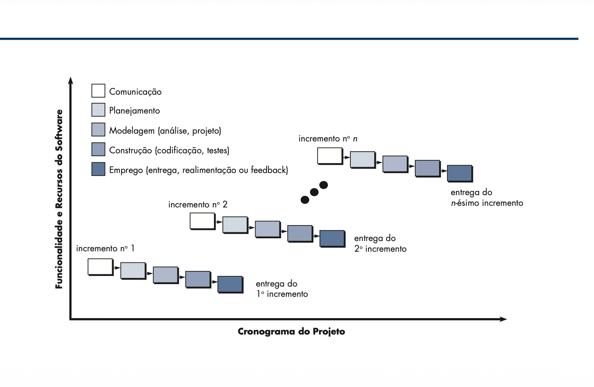
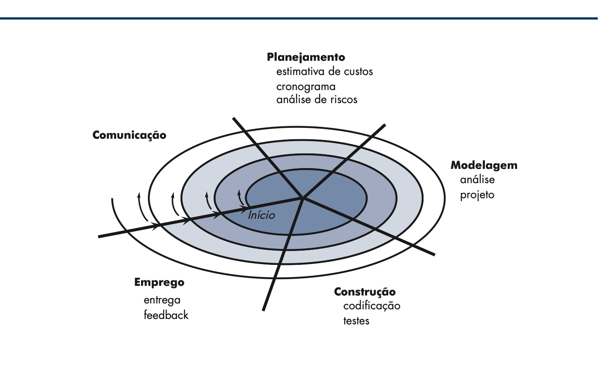

Aula 02 — Modelos de Processo de Software
O desenvolvimento de software é uma atividade complexa que envolve múltiplas etapas, profissionais e decisões técnicas. Para garantir organização, qualidade e previsibilidade, utilizam-se modelos de processo de software.
O que é um Modelo de Processo?
Um modelo de processo de software é uma representação organizada das atividades necessárias para desenvolver um sistema. Ele define como o desenvolvimento deve ser conduzido.
- Especificação de requisitos
- Projeto do sistema
- Implementação
- Testes
- Manutenção
Classificação dos Modelos
Os modelos de processo são divididos em duas categorias principais:
- Modelos Tradicionais: planejamento rígido e etapas bem definidas
- Modelos Ágeis: flexibilidade e adaptação constante
Modelo Cascata (Waterfall)
O modelo cascata é um modelo tradicional onde o desenvolvimento ocorre de forma sequencial. Cada etapa deve ser concluída antes da próxima iniciar.

- Requisitos
- Projeto
- Implementação
- Testes
- Manutenção
Modelo Incremental
O sistema é desenvolvido em partes chamadas incrementos, permitindo entregas progressivas.

- Entrega parcial de funcionalidades
- Evolução contínua
- Feedback mais rápido
Modelo Espiral
O modelo espiral combina desenvolvimento iterativo com análise de riscos. Cada ciclo envolve planejamento, análise, desenvolvimento e avaliação.

- Planejamento
- Análise de riscos
- Desenvolvimento
- Avaliação
Modelos Ágeis
Os métodos ágeis representam uma abordagem de desenvolvimento de software que combina uma filosofia específica com um conjunto de princípios práticos, visando a satisfação do cliente e a entrega rápida de sistemas funcionais . Diferente dos modelos tradicionais, eles se baseiam no desenvolvimento incremental, no qual o software é produzido em pequenas versões (incrementos) disponibilizadas em intervalos curtos, geralmente a cada duas ou três semanas.
A base dessa abordagem é o Manifesto para o Desenvolvimento Ágil de Software, que estabelece quatro valores fundamentais: indivíduos e interações mais que processos e ferramentas; software em funcionamento mais que documentação abrangente; colaboração com o cliente mais que negociação de contratos; e respostas a mudanças mais que seguir um plano.
Os principais princípios que regem os métodos ágeis incluem:
- Envolvimento do cliente: O cliente deve estar intimamente envolvido para priorizar requisitos e avaliar as iterações do sistema
- Aceitação de mudanças: Mudanças nos requisitos são bem-vindas, mesmo em fases tardias do projeto, para proporcionar vantagem competitiva ao cliente
- Foco no cliente
- Entrega frequente: O foco é entregar software operacional regularmente, preferindo intervalos de tempo mais curtos
- Simplicidade: Busca-se a arte de maximizar o volume de trabalho não realizado, focando no que é essencial para as necessidades atuais.
- Pessoas acima de processos: Reconhece-se que as habilidades da equipe são fundamentais, permitindo que os membros desenvolvam suas próprias formas de trabalhar sem processos rígidos.
As equipes de desenvolvimento ágil são caracterizadas por serem pequenas, altamente motivadas e, acima de tudo, auto-organizadas . Elas possuem autonomia para planejar e tomar decisões técnicas, preferindo a comunicação informal e presencial em vez de reuniões formais e documentos escritos . O progresso é medido principalmente pelo software em funcionamento entregue ao cliente
Diversos modelos de processos seguem essa filosofia, sendo os mais proeminentes o Extreme Programming (XP) e o Scrum . Outras abordagens incluem o Desenvolvimento de Software Adaptativo (ASD), o Método de Desenvolvimento de Sistemas Dinâmicos (DSDM), a família Crystal, o Desenvolvimento Dirigido a Funcionalidades (FDD) e a Modelagem Ágil (AM)
Enquanto os modelos convencionais (dirigidos a planos) enfatizam a ordem, a consistência e a documentação detalhada antes da implementação, os métodos ágeis tratam a especificação, o projeto e a construção de forma intercalada, permitindo que o sistema evolua conforme o conhecimento sobre o problema aumenta . Essa flexibilidade é particularmente útil em ambientes de negócios que mudam rapidamente, onde requisitos não podem ser totalmente previstos no início do projeto.

Scrum
O Scrum organiza o trabalho em ciclos chamados Sprints, com entregas rápidas e frequentes.
- Product Backlog
- Sprint Backlog
- Reuniões diárias
Kanban
O Kanban utiliza quadros visuais para acompanhar o fluxo de tarefas.
- To Do
- Doing
- Done

Comparação entre Modelos
- Cascata: rígido e sequencial
- Incremental: evolutivo
- Espiral: focado em riscos
- Ágil: flexível e adaptativo
Como escolher um modelo?
A escolha depende de fatores como:
- Clareza dos requisitos
- Complexidade do sistema
- Prazo
- Experiência da equipe
Conclusão
Os modelos de processo são fundamentais para organizar o desenvolvimento de software. Cada modelo possui vantagens e limitações, sendo necessário escolher o mais adequado para cada projeto.